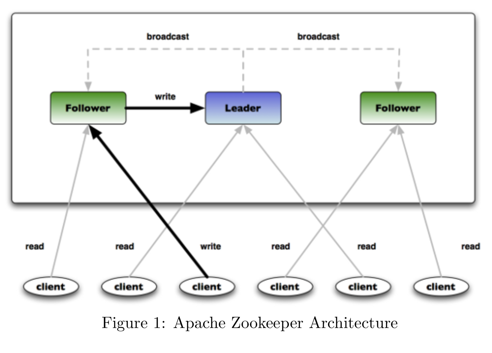
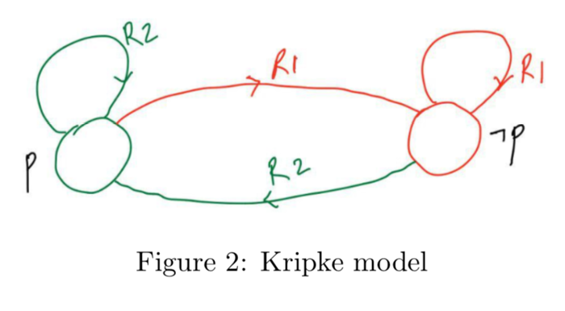
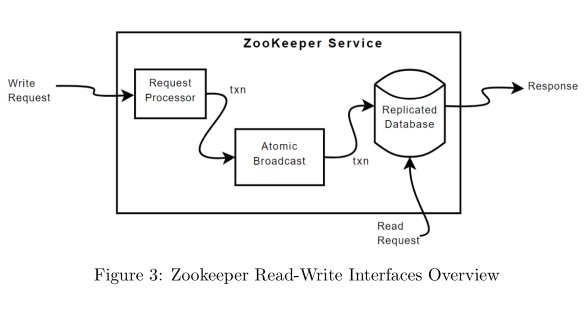
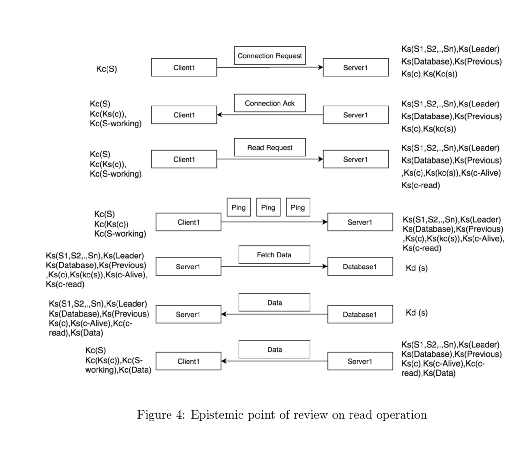
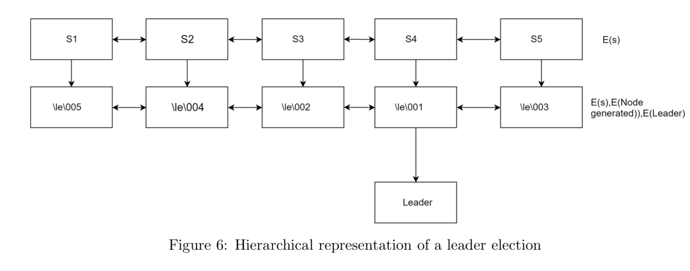

Zookeeper in Distributed System (Arjun, Yikun and Parth)
Zookeeper introduction
Zookeeper is a distributed system used for co-ordination between large number of hosts. Coordination
and management of services in a distributed system in a complicated process and Zookeeper
comes to the rescue because of it’s simple architecture and API design. A distributed system is
basically an interconnected group of systems which collaborate together to establish a task, also
known as a service, this group of system is usually referred to as a cluster and
each system in this cluster is referred to as a node. As this cluster(distributed)
is used to run a service, it contains both client and server interfaces.
Our focus for this project is primarily the server side of the Zookeeper distributed
system because servers are ’actually’ distributed systems in epistemic terms, which form the cluster
and have a common interface for clients to send in read and write requests. We will analyze all
these instances of Zookeeper distributed system from an epistemic point of view.
Analysis of a distributed system from an epistemic point of view is an interesting proposition,
primarily because of scale at which information(knowledge) update occurs for all the agents in a
distributed system. Our analysis is focused on two use cases of the zookeeper distributed system,
communication between clients and server(read-write requests) and leader election for managing
coordination between nodes in the cluster. Epistemic analysis is the right tool for analyzing how a
distributed system retains all the desired data properties, such as data integrity, essential
properties of a leader election and client-server communication

Benefits of a distributed system
There are three major advantages of a distributed system, we list down and briefly elaborate on each
of them below:
Reliability:
Failure of any node in the cluster[distributed system] doesn’t result in failure of the whole
infrastructure. Similarly, zookeeper server side distributed system architecture
deploys a fault tolerant mechanism which can easily tackle situations in which any subset of the
system might breakdown.
Scalability:
A distributed system can easily be scaled by simply adding more nodes into the architecture.
Transparency:
A distributed system presents itself as one entity, for example all the servers in figure 1 can
be accessed from a single interface, hiding away all the complications within the architecture
itself. Thus, making the whole process transparent and easy to understand.
Kripke model analysis of zookeeper
For a reliable functioning of the zookeeper ensemble, at least three servers need to be in a working
state. Based in this information we can draw the following Kripke model.
Let M be a arbitrary kripke model with < S, π, R1, R2 >.
π =< p, ¬p >
p : Zookeeper system in working condition.
¬ p : Zookeeper system in failure condition.

R1 : Denotes the transition from working state to failure state. It implies that, less than systems
in the zookeeper ensemble are in working condition.
R2 : Denotes the transition from failure to working condition.It implies that more than three systems
are in working condition.
Implementation
Zookeeper in Distributed System
Client-server communication
Client-server communication is an integral part of any distributed system and how zookeeper
distributed system accepts and distributes services between all the nodes in the cluster and
completes the requested tasks. Two major communication paradigm between a client and server is read
and write requests. In the following two subsections we elaborate on each of these communication
paradigms and updates rendered to knowledge stack of all the agents involved in the
communication:

Read request and task allocation
If a client wants to read from the database of a server in the Zookeeper distributed system. Client
first serves a connection request to the server, to which the server sends an acknowledgement
indicating that the server is not busy and is ready to handle the request from the client. Once the
connection is established, the client serves a data read request to the server with the pointer to
the data in the database, consequently, the server forwards this request to the database and the
database responds with the data stored at that particular pointer. This data is then conveyed to the
client. With this, one read cycle concludes. Read operation is one of the strong points in
Zookeeper, as read requests are served by a particular server to the client. They are much faster
and can also be tackled concurrently. We present read specific knowledge stack with knowledge
updates at each step for all the agents, as shown in figure 3.

Write request and task allocation
Write operations in Zookeeper are really interesting from an epistemic point of view. The leader in
the cluster is solely responsible for all the write operations. If a connection is not already
established between the client and server, then client first serves a connection request to the
server. Once the connection request is approved, the client then sends a write request. The server
then forwards the write request to the leader, and leader then atomic broadcasts[public
announcement] this request to rest of the servers in the cluster. Once all the servers
receive the request from the leader, they write the data into their respective databases. Then they
send back an acknowledgement indicating the write was successful. Once the leader receives this
acknowledgement from the servers in the cluster, it then sends an acknowledgement to the server,
which got the write request from the client. This server then sends the confirmation back to the
client.
This process has it’s advantages and disadvantages. One of the major advantages is the fact that data
is persistent throughout all the corresponding databases of servers in the cluster. Also, this means
that write operations cannot be concurrent and can only be linear and this is the reason why
Zookeeper under-performs when it comes to write-extensive tasks.
Leader Election
Leader election in a distributed system is the process of electing a node as a coordinator of tasks
assigned to the distributed system. At the initial state, that is, before the task is assigned, all
the nodes in the cluster are unaware as to who the leader is or either unable to coordinate within
the cluster. After a leader election, all the nodes in the cluster recognize one unique node as the
leader and coordinate with it for particular use cases of the cluster.
In order to elect a leader, all the nodes in the cluster communicate with each other and devise a
means to single out a leader node. Leader election algorithms are designed to minimize the byte
transmission during the election process. In a large cluster if byte transmission is not efficient
enough then the run-time of election process can take a lot of time, rendering the whole cluster
slow or practically ineffective.
There are there important criteria which a valid leader election algorithm should meet and they are
as follows:
A election algorithm should finish it’s operations in finite time, that is, it should be based
on
deterministic states and cannot incorporate probabilistic election processes.
Only one node should be elected as a leader after application of the leader election algorithm
and in case of a conflict, the algorithm should provide the conflict removal procedures.
Knowledge of all the nodes should be updated once the leader election is over and all the nodes
should know which node is the leader node.
Leader election algorithm

In this section, we elaborate on the election algorithm for leader election which we have used in our
project. We analyze this scenario for N nodes. The process of election process is as follows:
1) All nodes create a sequential, temporary znode with the same path. For example, /app/leader
election/guid_
Zookeeper ensemble will append the 10-digit sequence number to the path and the znode created
will be /app/leader election/guid 001, /guid 002, etc.
Out of all the nodes, the node which created the smallest number will be elected as the leader
and all the other nodes will become it’s followers.
In addition to followers, this algorithm also creates watchers, for example, znode with number 8
will watch the znode with number 7 and znode 7 will watch znode with number 6 and so on. This is
useful in case of leader node failure and this way election process can be re-initiated in case
a leader fails.
If the leader node fails, in that case the znode corresponding to the leader gets removed. Also,
the next in line follower will obtain this information from the watcher. Now this follower will
check for znodes with the smallest number, if it cannot find a znode meeting the requirements
then it will take up role of a leader.
All the other nodes will also elect the znode with the smallest number as the leader.
Application
Zookeeper in Distributed System
Kc(S1),...,Kc(S5)
Kc(S1),...,Kc(S5)
Kc(S1),...,Kc(S5)
Ks(S1),...,Ks(S5)
Ks(S1),...,Ks(S5)
Ks(S1),...,Ks(S5)
Ks(S1),...,Ks(S5)
Ks(S1),...,Ks(S5)
Kb(S1)
Kb(S2)
Kb(S3)
Kb(S4)
Kb(S5)
/le/001
/le/001
/le/001
/le/001
/le/001
Application and user guide
In this section we introduce the interface of our final application for this project. The main
screen of the application consists of a set of three clients[aligned vertically on the extreme
left], a set of five servers[aligned vertically in the center] and their respective
databases[aligned vertically on extreme right] as shown in figure 5. On the top left corner of the
application screen there are seven horizontally aligned buttons annotated as follows: Initialize,
Reset System, 5x slower, Slower, Reset speed, Faster, 5x faster. Against each client we also have
two buttons for read and write operation. With each agent in the distributed system we have a
knowledge stack which keeps a track of all the knowledge generated in a particular order and updates
for each agent in the distributed system.
Initialization
We can initialize the distributed zookeeper system by clicking on the initialize button. Clicking
on the initialize button will perform the election selection algorithm on the cluster of
servers, as can be seen in figure 6. We can also observe that server with the smallest number
will be selected as the leader for the cluster of servers, in this particular example, it is
server 5.
Reset
We can reset the whole system clicking on the Reset system button and it will
retract back to the initial state as shown in figure 5. In the initial state there is no leader
and there is no connection established between the servers too.
5x button
By clicking on 5x slower button we can slow down the speed of all communication between the
client, servers and databases. In essence, the system will still perform the same operations,
just it will be 5x slower. Similarly, we can use Slower, Reset Speed[system returns back to the
initial speed], Faster and 5x faster.
Read
By clicking on the read button for a client, we can initialize a read operation from that
particular client to a server and this process will be simulated between the client, server and
the database, in the application.
Write
By clicking on the read button for a client, we can initialize a read operation from that
particular client to a server and this process will be simulated between the client, server,
leader, and database, in the application.
Conclusion
Zookeeper in Distributed System
We analyzed basic components of a distributed system[zookeeper architecture] and it’s communication
paradigms through an epistemic point of view. We discussed the advantages and disadvantages of
a distributed system, specific to the zookeeper architecture and we reasoned why epistemic analysis
of a distributed architecture might be an interesting proposition. We tracked knowledge space
for all the agents in our distributed system through a knowledge stack and observed how knowledge
was updated for all the agents in read-write requests and in the leader election process
simulations, which we showcased in our application.
Our sole purpose for this project was to look at an entirely new problem from an epistemic point of
view. To dissect a complicated enough system and reduce it down to the very fundamental units of any
information system, that is, knowledge and propagation of knowledge[information transmission].
About
Zookeeper in Distributed System
This website offers a implementation of Zookeeper protocol with Kripke models. The model checker was
developed for the Multi Agent Systems course at the University of Groningen for the academic year of
2018/2019.
Group members
Arjun Harish
Yikun Li
Parth Tiwary
References
[1] Patrick Hunt, Mahadev Konar, and Flavio P. Junqueira. ZooKeeper: Wait-free coordination for
Internet-scale systems. Yahoo Research, 2010.
[2] M. Abd-El-Malek, G. R. Ganger, G. R. Goodson, M. K. Reiter, and J. J. Wylie. Fault-scalable
byzantine fault-tolerant services. In SOSP ’05: Proceedings of the twentieth ACM symposium on
Operating systems principles, pages 59–74, New York, NY, USA, 2005. ACM.
[3] R. Fagin, J. Halpern, Y. Moses, M. Vardi Reasoning about Knowledge MIT Press (1995)
[4] R. Fagin, J. Halpern, Y. Moses, M. Vardi What can machines know? On the properties of
knowledge in distributed systems Journal of the ACM, 39 (2) (1992), pp. 328-37